This project was about learning how to do image mosaicing. We shoot and digitize pictures, recover homographies, warp images, and blend images into a mosaic.
By selecting corresponding points between two images, we can compute a homography matrix. The homography matrix does an affine transformation to map points from one image to the corresponding points in the other image. We can then use this homography matrix to warp one image into the perspective of the other.
The affine transformation can be used to rectify an image, aka "straighten" it so that a specific part of the image appears flat and the focus of the image. The affine transoformation can also be used to create a mosaic by making one image appear to be in the perspective of another image.
In the latter half of the project, we used techniques including adapative non-maximal suppression, RANSAC, and feature matching to stitch together two images. More details on these techniques will be included later on this page.
As mentioned above, we first need to select corresponding points between the two images. We then compute the homography by solving for the minimum-norm solution of the following linear system:

In the above picture, P2 are the set of points part of the image that we transform to look like
it's in the perspective of the other image. P1 are the points in this other image. Each point in P2
corresponds to a point in P1. Thus, the notation in the image works as follows: X1(P2) means we want the
x-value of the 1-indexed point in P2.
We use the "r" values above to construct the homography matrix H. Applying H to the image of P2 will
transform it to look like it's in the perspective of P1.
To make rectified image, we apply the homography matrix to 4 points selected in an image (the points "P2"). However, unlike in warped images, the P1 points don't correspond to points in another image. Rather, they are points that form a rectangle. This means that the homography matrix will map the part of the image specified by P2 points and "rectify" that part of the image.
Picture of the view outside my apartment (taken from balcony), and then the rectification of an exterior wall of a building in my view.


Stock photo of a room, with the rectification of the mirror.


Here, we completed the process outlined at the start of the project, selecting sets of corresponding
points between two images and warping one image into the perspective of the other. This produces
a panoramic-like image.
For pixels of the resulting image that have overlap between both the images, we take the average pixel value.
While this works fine to a certain degree, the resulting image is not very smooth. A point of improvement
would be to use other techniques, like a weighted average or a Laplacian pyramid, to make the transition
much smoother.
Here are the original two images:

Here is the warped image:

Here are the original two images:


Here is the warped image:

Here are the original two images:


Here is the warped image:

We leverage "corners" (as detected by the Harris corner detector) as features to match between two images. In this case, "corners" are unique points in an image that have a high change in intensity when moved a small distance in any direction. As we'll later see below, Harris corner detection results in a lot of "corner" points in an image, which then need to be filtered in order to identify the most relevant features for matching.
As we can see from our results, Harris corner detection results in a lot of "corner" points in an image. Adaptive non-maximal suppression is a technique that helps us filter out these points so that we are left with only the most relevant features. With ANMS, the algorithm has a "radius," and within the radius, a "stronger" corner will suppress "weaker" corners. As we see below, the ANMS results in a much more manageable number of corners, while still retaining the image's most relevant features.
Next, we must extract features for each corner. We do this by taking a 8x8 patch around the corner and performing some operations on it. By extracting a small region around each point, resizing it, and normalizing it, we create a standardized representation that can be used to match points across different images.
Based on this standardized representation for each corner, we can match features between two images. We do this by going through each selected corner in the first image, and finding the two corners in the second image that have the lowest distance to the corner from the first image. If the match to the "better" corner is sufficiently better than the match to the "worse" corner, we add the better match to our list of matches.
RANSAC lets us to identify the best matches between two images and filter out outliers. We first select a random set of matches, and then compute a homography matrix using the points in the set to map the second image to the perspective of the first image. We apply this homography matrix to the all the points in second image, check the distance to the coresponding point in the first image. If the distance is too high, we discard the match as an outlier. We repeat this process several times (1000 times), computing a new homography matrix each time and using the set of matches that have the most number of inliers. We return this set of inliers.
Based on the set of matches that result from the RANSAC algorithm running, then run the same image warping process as we did earlier in the project (except that this time, the points are auto-selected rather than manually selected).
For every set of images that get merged below, we have the following six sets of images:
Original images:
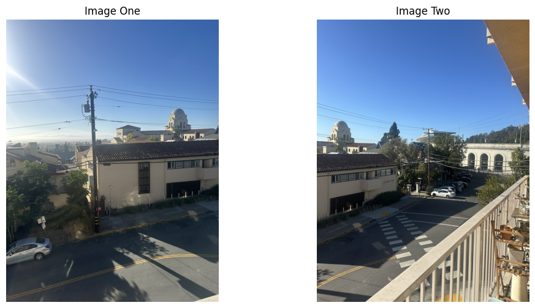Harris corner detection results:
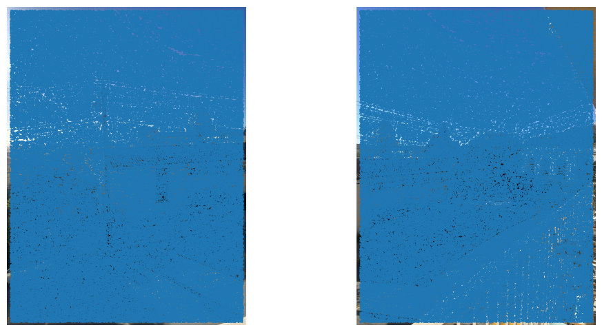ANMS results:
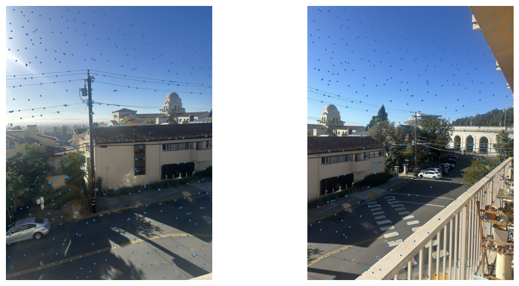Feature matching results:
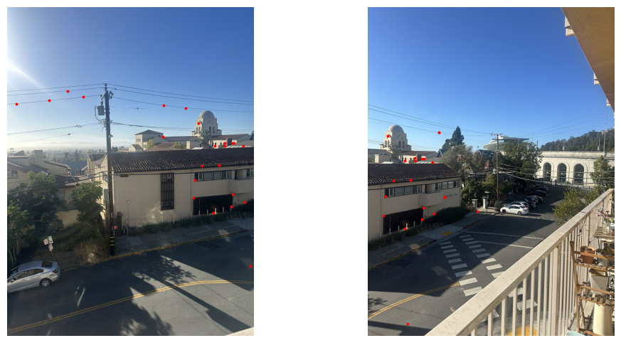RANSAC inlier results:
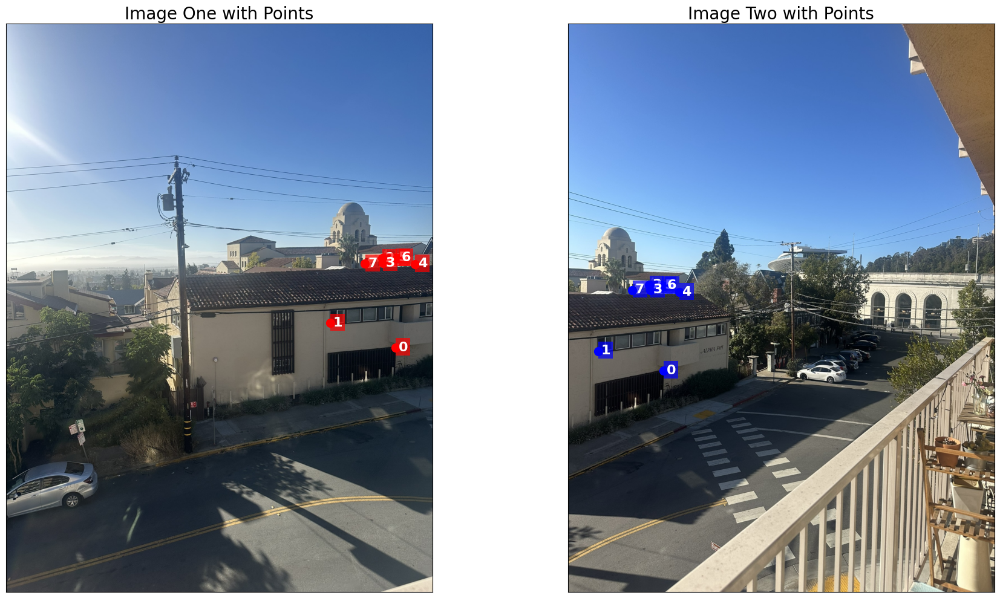Final stitched image:
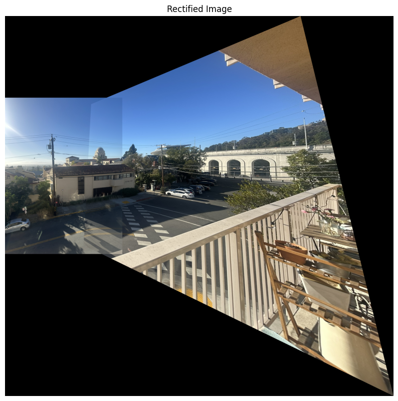For reference, here is the warped image from 4A Part 2 with manually selected points:
Original images:
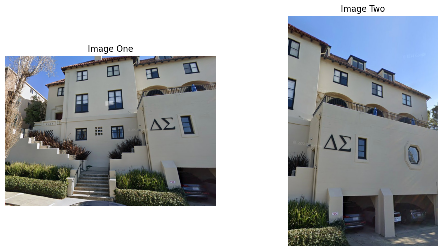Harris corner detection results:
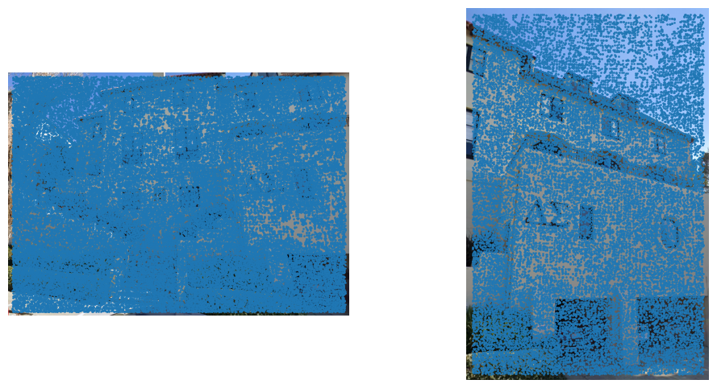ANMS results:
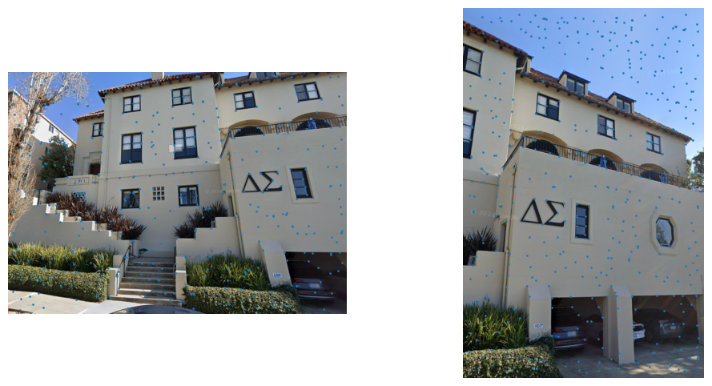Feature matching results:
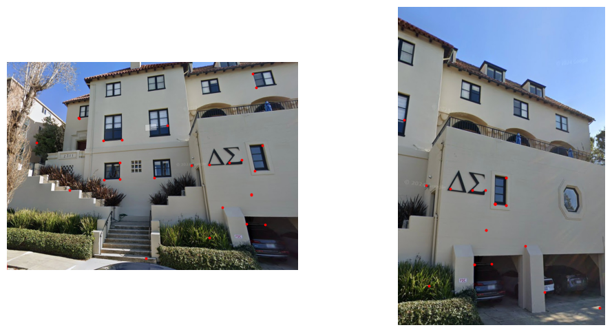RANSAC inlier results:
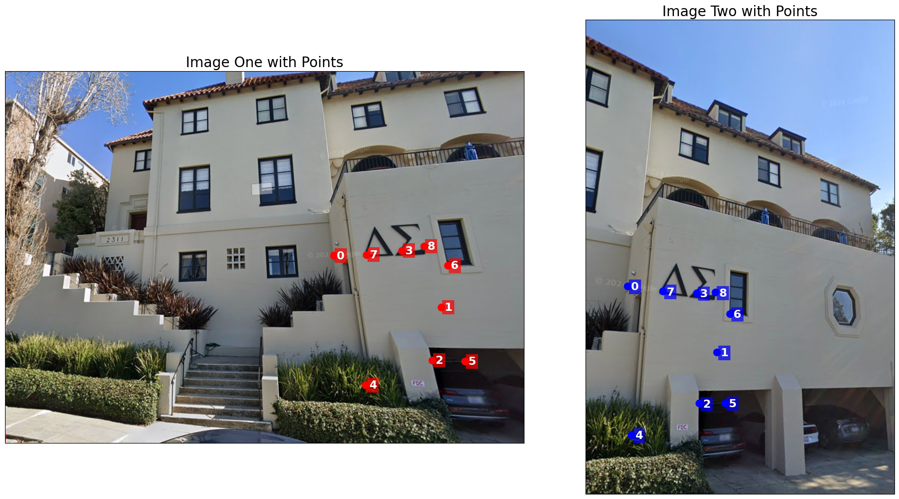Final stitched image:
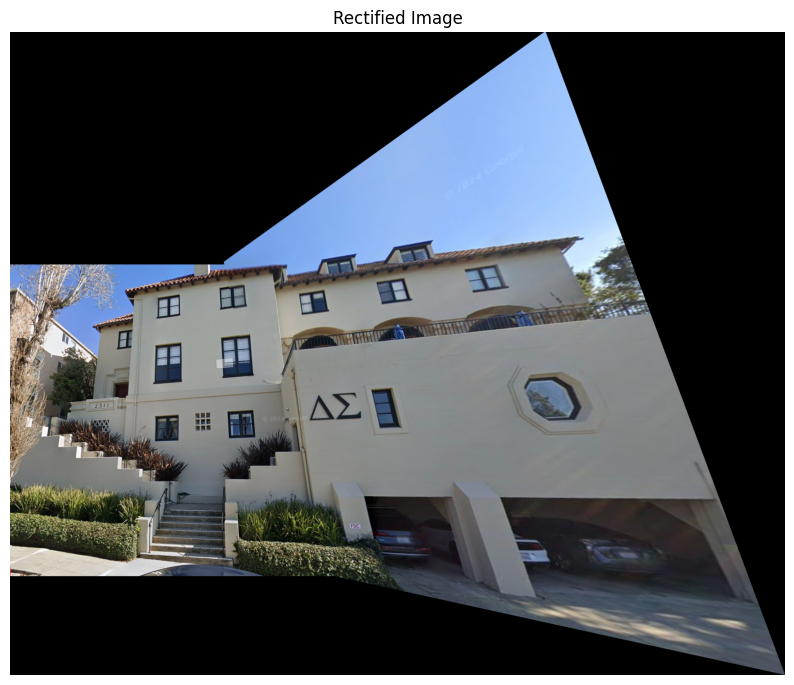Original images:
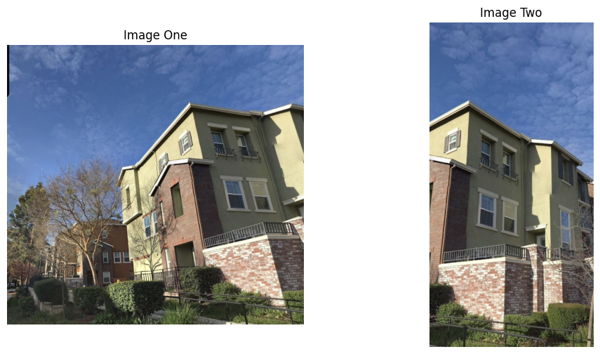Harris corner detection results:
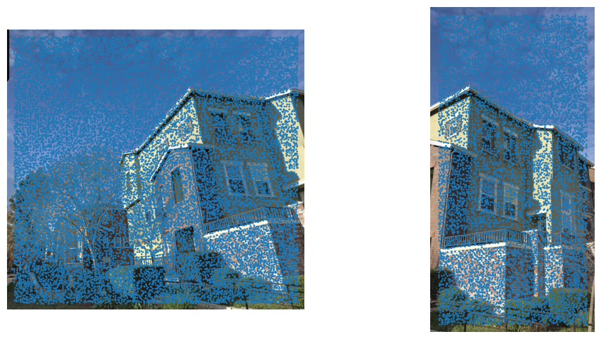ANMS results:
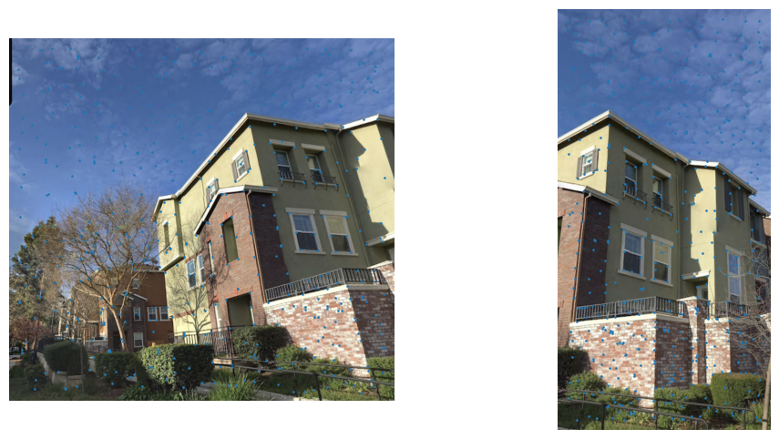Feature matching results:
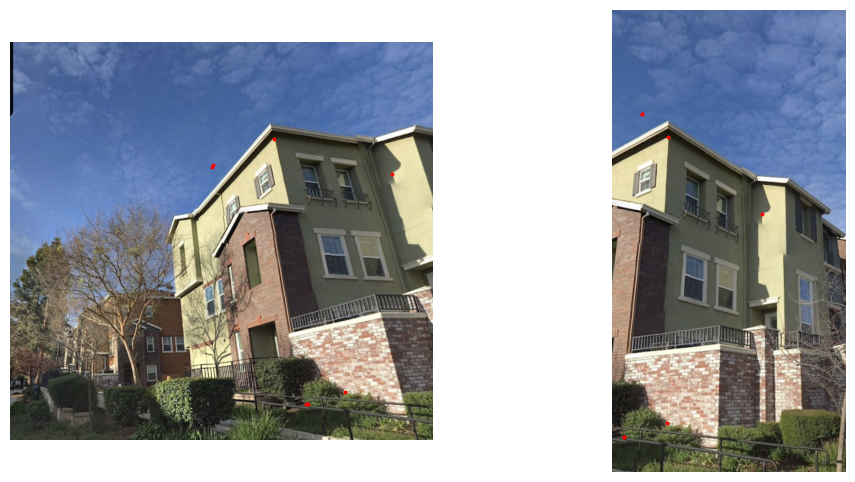RANSAC inlier results:
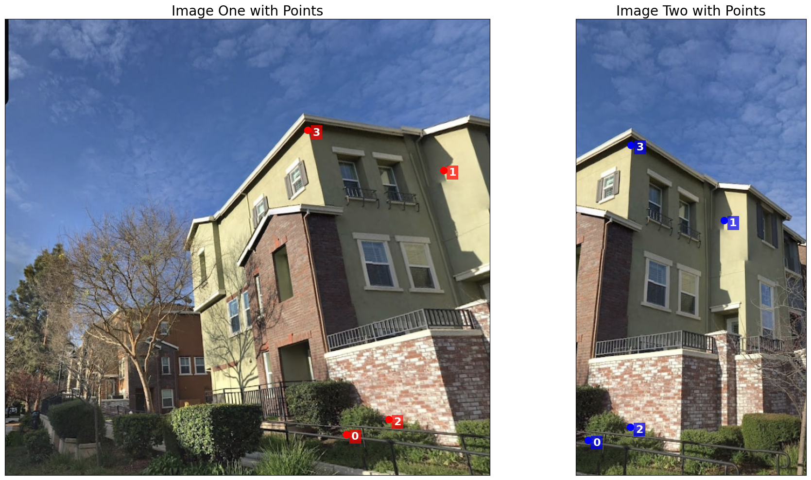Final stitched image:
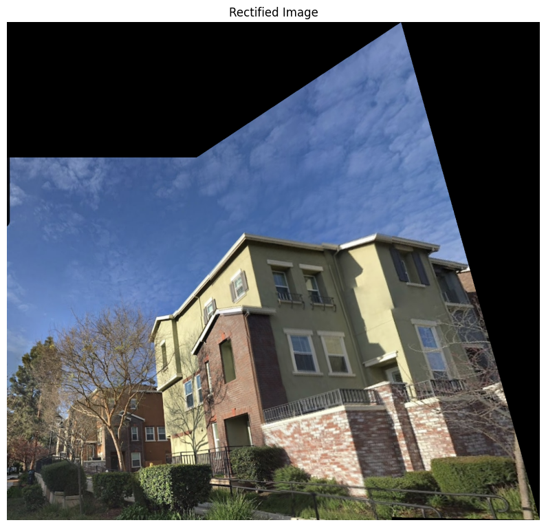